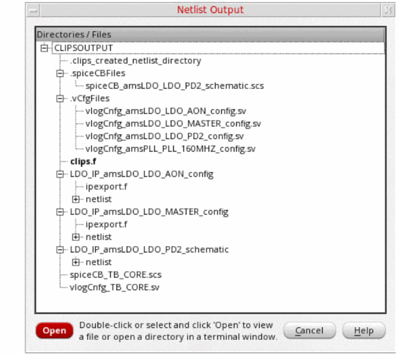

Viewing the Netlist Output
By default, all switched config or schematic views are netlisted in the ./CLIPSOUTPUT directory.
-
To view the contents of this directory, click the View Output command on the toolbar. The directory structure is displayed in the Netlist Output window, as shown below.
 - To view the contents of the files displayed in the above window, double-click the file, or select the file and click Open.
-
To open the terminal in a directory, double-click the directory, or select the directory and click Open.
To set your own output directory, perform the following steps. -
To view the list of contents of this directory on the command line, enter the following command in the terminal:
% ls ./CLIPSOUTPUT/
Related Topics
Contents of the CLIPSOUTPUT Directory
Return to top